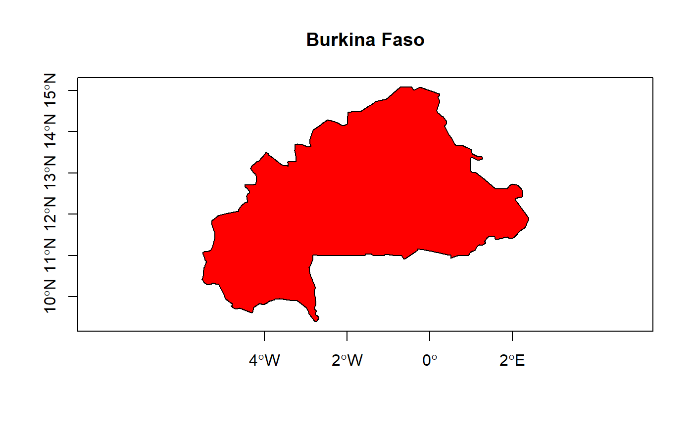
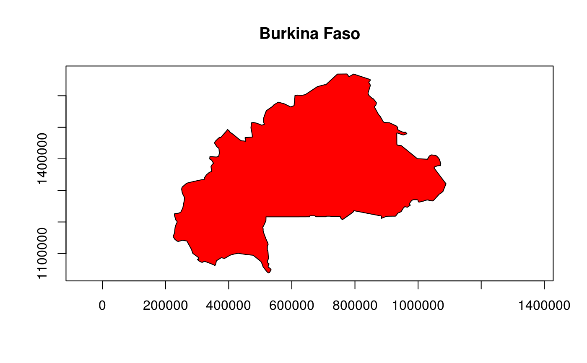
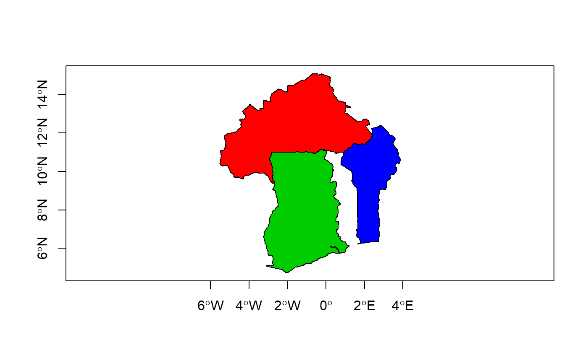

This function uses the data set TMWorldBorders. One or several countries
can be selected and will be returned as an object of class
SpatialPolygons.
create.boundary(countries = NULL, multiple = F,
proj = "+proj=longlat +ellps=WGS84")
Arguments
| countries |
a vector of character string corresponding to the name of the countries
you want to extract from the dataset. If NULL, a dialog box will be appear in order to select
the desired country. |
| multiple |
should the dialog box allow multiple selection (unused if countries is specified)? |
| proj |
map projection to use for the result (longitude and latitude in decimal degrees by default). |
Value
Object of class SpatialPolygons{sp}.
Details
proj could be a character string corresponding to a PROJ.4
projection (see http://trac.osgeo.org/proj/ for more details)
or an object of class CRS{sp}.
Note
The result will be automatically plotted.
See also
Examples
# NOT RUN {
boundary <- create.boundary()
# }boundary <- create.boundary("Burkina Faso")
#> Source: World Borders Dataset 0.3 (2008)
#> Mis à disposition par Bjorn Sandvik, http://thematicmapping.org/downloads/world_borders.php
#> Ce jeu de données a été adapté par Schuyler Erle à partir de sources dand le domaine public.
#> Sean Gilles a nettoyé le fichier et effectué quelques améliorations..
#> Ce jeu de donné est distribué sous licence Creative Commons Attribution-Share Alike.
#> http://creativecommons.org/licenses/by-sa/3.0/
#> Les frontières et désignations employées n'impliquent l'expression d'aucune opinion ni acceptation de la part des auteurs.

boundary <- create.boundary("Burkina Faso",
proj="+proj=utm +zone=30 +ellps=WGS84 +datum=WGS84 +units=m +no_defs")
#> Source: World Borders Dataset 0.3 (2008)
#> Mis à disposition par Bjorn Sandvik, http://thematicmapping.org/downloads/world_borders.php
#> Ce jeu de données a été adapté par Schuyler Erle à partir de sources dand le domaine public.
#> Sean Gilles a nettoyé le fichier et effectué quelques améliorations..
#> Ce jeu de donné est distribué sous licence Creative Commons Attribution-Share Alike.
#> http://creativecommons.org/licenses/by-sa/3.0/
#> Les frontières et désignations employées n'impliquent l'expression d'aucune opinion ni acceptation de la part des auteurs.

#> Source: World Borders Dataset 0.3 (2008)
#> Mis à disposition par Bjorn Sandvik, http://thematicmapping.org/downloads/world_borders.php
#> Ce jeu de données a été adapté par Schuyler Erle à partir de sources dand le domaine public.
#> Sean Gilles a nettoyé le fichier et effectué quelques améliorations..
#> Ce jeu de donné est distribué sous licence Creative Commons Attribution-Share Alike.
#> http://creativecommons.org/licenses/by-sa/3.0/
#> Les frontières et désignations employées n'impliquent l'expression d'aucune opinion ni acceptation de la part des auteurs.
